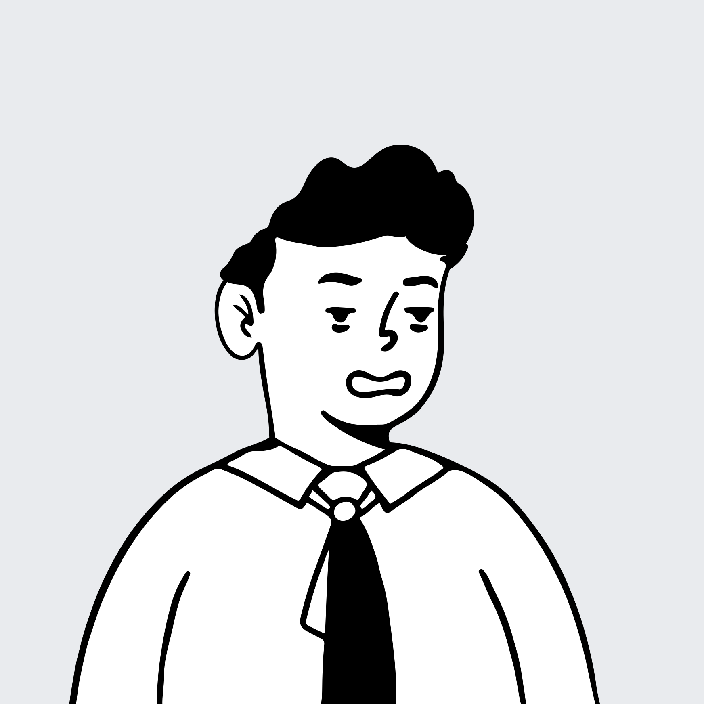
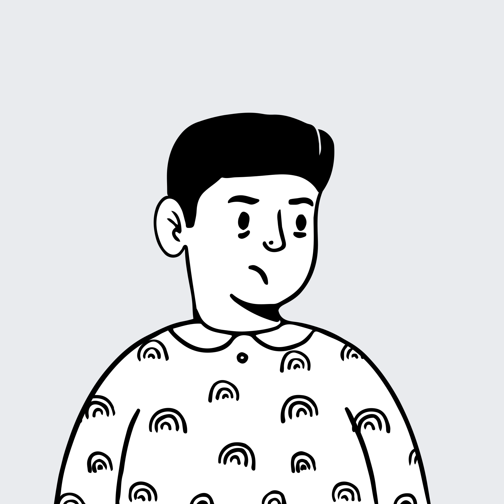
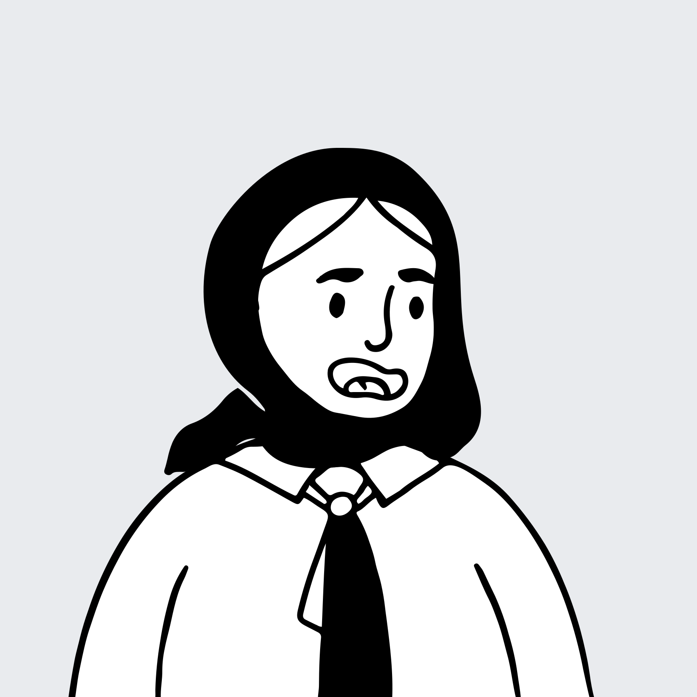

42人
一线深度访谈
28 位盘古开发者
5 位 PAE · 9 位 GPU 生态专家
从访谈对象、原始问题到主题归纳，研究保留了问题发生的场景、上下文与用户原声，避免只用单一问卷数字概括体验负担。
28 位盘古开发者
5 位 PAE · 9 位 GPU 生态专家
来自真实开发行为、问题上下文
与用户原声的逐条整理
覆盖 15 个场景，进一步明确
P0 / P1 与六项机会方向
五类均来自 Word 的 28 位盘古受访者；后续按“正式画像 → 对应旅程”逐组展开。
架构探索、快速验证与迁移精度对齐。
预训练与后训练数据的处理、质检和先导验证。
训练框架、监控、性能优化和跨层故障定位。
推理性能、训推对齐、部署与评测。
算子设计、开发、调试与性能调优。

比对资料与版本
写原型验证可行性
配置与算子适配
逐层比对首次分叉
等待算子与发布
入口分散
AI 不可读
能力难查
原型与生产脱节
性能不稳定
工具不成熟
约束不清
迁移范围难判断
测试重复
标红非首因
缺代码关联
偶现难复现
版本节奏慢
训推分离
交付等待
统一知识入口
按场景能力表
AI 自主检索
快速开发路径
生产演进规则
可复用模板
适配检查
可运行 golden
迁移证据包
自动首次分叉
调用链证据
稳定复现实验
发布前验证
兼容检查
可回退交付
汇集多来源数据
过滤、清洗并加工数据
抽查质量、覆盖与风险
比较数据带来的模型增益
归档数据与可复用方法
数据来源多
体量大
采集准备成本高
链路分散
通用工具不足
处理过程难衔接
大规模处理后仍靠人工抽查
质量判断成本高
需要多轮先导实验
增益无法快速确认
处理与实验经验难沉淀
复用路径待验证
任务与数据来源可追踪
采集规则可复用
规模预估
统一处理链路
可复用加工模板
过程可回看
质量规则与抽检建议
风险提示
待验证项可见
实验与数据版本关联
增益对比
复现实验包
数据血缘与资产目录
处理方法沉淀
复用入口

配置资源与并行策略
观察吞吐、通信和资源
收集异常时点和 rank
确认框架、通信、算子或硬件根因
验证修复并回归
配置差异难预检
监控数据分散
资源状态不透明
性能粒度不足
多卡难自动对齐
异常缺解释
timeout 多为表象
首个异常不清
日志海量
跨层证据断裂
责任人不清
人工逐 rank 排查
复现成本高
修复方向需反复确认
回归周期长
配置检查
统一对象映射
运行前风险提示
自动多卡对齐
性能摘要
异常趋势解释
首个异常 rank
时间线关联
根因候选
跨层证据包
owner 协同通道
可读诊断
稳定复现
自动回归
问题闭环沉淀

转换权重和运行环境
比较同 token 和调用链
处理图模式、缓存和并行
从模型热点定位算子空间
完成评测、兼容和发布
权重和环境差异
版本路径不清
适配重复
误差来源跨栈
配置难复核
人工逐层比对
图模式与缓存关系复杂
框架支持不全
升级风险不可见
缺性能规格
模型热点难下钻
收益难拆
验证链路分散
回退方案缺失
客户学习成本高
转换清单
环境一致性检查
版本映射
调用链证据
自动配置比对
对齐预检
部署向导
风险提示
兼容验证
模型到算子映射
性能基线
自动分析
发布前检查
可回退交付
评测证据包
反推 tiling 与 buffer 生命周期
实现 kernel 和边界逻辑
构建并转换 golden
定位内存、同步和精度问题
判断搬运、bank 与流水瓶颈
模板理解偏差
tiling 难复用
芯片差异资料不足
对齐和 UB 容量靠手算
边界条件复杂
方案协作易偏差
全量重编
测试资产不互通
自定义包难直测
断点不可靠
错误路径不直观
内存同步难查
缺 cache/bank
缺理论基准
数据粒度不足
可视化方案
设计规范沉淀
代码反向生成
辅助求解
边界检查
统一模板
增量构建
统一 golden/YAML
自定义包直测
可靠断点
参数化报错
内存同步检测
微观观测
流水仿真
自动根因分析
92 次组件提及覆盖 21 个组件；算子加速库与 MindStudio Insight 合计 33 次，占 35.9%。头部组件适合优先推进系统性改进，长尾组件保持专项问题跟踪。
模型点火窗口约 15 天，而 Ascend C 从需求澄清、评审、开发到发布常需 1–2 个月；团队以 Triton 与自定义算子库过渡。
复杂项目的精度定位常消耗 1–2 人月；msProbe 标红节点可能只是误差扩散后的表现，开发者仍要沿代码回溯首次分叉。
RL 版本发布中，70%–80% 以上时间用于 logprob 对齐；问题可能来自训练、推理、框架、算子、并行策略或模型结构。
通信 timeout 经常只是最终表象；数百份 rank 日志要人工寻找最早退出的进程或异常算子，规模越大资源损失越高。
资料分散在 GitCode、老 CANN 仓与官网，内容和更新时间不一致；算子功能名与精确接口名也不总是一一对应。
接口参数变化后文档不一定同步；torch_npu 常用接口与 CANN 文档难映射，复杂参数与组合约束靠试错验证。
以下按报告的主题问题展开。每个问题分别呈现：开发者处境与影响证据，以及明确的需求、对标实践或产品边界。
模型点火窗口约 15 天，而 Ascend C 从需求澄清、评审、开发到发布常需 1–2 个月；团队以 Triton 与自定义算子库过渡。
GPU→NPU 算子转换、常见 shape/头数泛化覆盖、缩短需求与发布链路。
从模型节点生成可执行的算子开发路径
复杂项目的精度定位常消耗 1–2 人月；msProbe 标红节点可能只是误差扩散后的表现，开发者仍要沿代码回溯首次分叉。
计算图与代码映射、点选自动加 dump、双端自动比较、首次分叉定位与概率问题复现。
qwen3-32b · run #1842
RL 版本发布中，70%–80% 以上时间用于 logprob 对齐；问题可能来自训练、推理、框架、算子、并行策略或模型结构。
从同一 token 的概率差异沿函数/接口调用链下钻；自动匹配训推节点、追踪配置和 commit、输出可移交证据包。
同 token 差异沿调用链下钻
通信 timeout 经常只是最终表象；数百份 rank 日志要人工寻找最早退出的进程或异常算子，规模越大资源损失越高。
跨 rank 日志关联、定位首个异常 rank 与时间点，区分算子/进程/硬件/负载等根因，提供 HCCL 可读诊断。
512 ranks · HCCL timeout
12:06:31 · matmul_allreduce
早于 timeout 4m 18s资料分散在 GitCode、老 CANN 仓与官网，内容和更新时间不一致；算子功能名与精确接口名也不总是一一对应。
统一入口、支持 AI 解析与检索；按芯片代际、训推、精度分类的算子能力表应尽量从代码自动生成。
Ascend 910B / A5 · fp16 / bf16
接口参数变化后文档不一定同步；torch_npu 常用接口与 CANN 文档难映射，复杂参数与组合约束靠试错验证。
代码与文档同步发布、明确版本与更新时间；提供典型 shape/dtype 的可运行示例和 golden，公开维护与反馈入口。
8.3.RC1 · 与代码校验通过
[B, S, H] · fp16 / bf16
必须整除 H
BSH / SBH
output = torch_npu.npu_fused_attention(...)✓ golden 已校验 · 3 shapes
模型侧找到热点后，缺少运行时数据搬移、单算子性能规格与理论基准，端到端目标无法拆解成可执行的算子目标。
开放稳定的指令、流水、bank 冲突、每核性能；补充 Vector API 理论耗时、带宽和 bound 判断，并支持自动分析。
模型热点 #1 · 昨日基线对比
有效信息可能只在 Device 侧 plog；模型开发者难从 torch_npu 调用位置理解底层变量、shape 和约束，错误常在层间扩散。
自动汇总 plog 有效信息到训练日志；统一内部名称与 torch_npu 映射；给出首个异常节点与责任人协同入口。
torch_npu.npu_fused…
FusedAttentionScore
需为 64 的倍数
FP8 等格式出现收敛异常时，团队仍用 Python 和 Jupyter 绘制张量分布、极值、kurtosis，且问题不一定稳定复现。
自动采集关键张量分布、极值、kurtosis 与误差传播；定位首次误差引入层并跨步骤追踪。
run #884 · 1,024 steps
高优化模式下断点不可靠，开发者依赖 print、仿真日志和逐指令排查；复杂问题的精度、内存与同步根因难收敛。
提供可靠断点、内存与同步检测、调用链与源码映射；让错误在编译/运行时就携带实际参数和约束。
LocalTensor<half> x = ... pipe_barrier(PIPE_MTE2); Copy(out, x, burstLen); pipe_barrier(PIPE_V); return;
开发者能看到耗时，却难判断是 cache、bank 冲突、流水还是搬运问题；设计阶段也缺少可验证的流水模拟。
提供 cache/bank/指令/流水观测，补充仿真与理论性能基准，让设计和实测形成可解释闭环。
性能分析已完成
发生于 L1 → UB 搬运阶段
查看建议 →切分、buffer 生命周期、32B 对齐与 UB 容量的关系主要靠手绘和经验反推；多模板协作容易产生方案理解偏差。
由算子代码自动还原 kernel 流程、buffer 生命周期和 tiling 切分；辅助求解、边界检查与统一设计模板。
由 kernel 代码还原设计与 buffer 生命周期
同一算子可能生成 460+ .o；host 改动也触发 device 重编；三套测试框架的 YAML/golden 不互通，自定义算子包难直测。
依赖图增量构建、消除冗余编译、原路径报错；统一测试资产并支持自定义包直测、边界用例设计和 IDE 约束提示。
变更：host/attention_impl.cpp
CUDA 的 SIMT 心智与 Ascend C pipeline/MIX 差异大；910B→A5 的 regbase、SIMT、CV 通信与格式变化，资料又不完整。
提供代际差异、编程选型、迁移检查与 A5 架构/融合指导；补充高阶 API 正交性与面向用户的文档。
attention_kernel · 迁移向导
合图代价模型不准、A5 性能劣化、打印只在 CCE，缺 cache/bank 观测、反汇编映射与 LSP，问题需框架与算子联合定位。
改进代价模型并提供手动合图控制；补齐 CCE 打印、观测、反汇编/代码映射和编辑器 LSP。
graph #attn_109 · A5
模型从训练框架进入 MindIE 等引擎，需要重新处理权重、环境、图模式与缓存；并行、vLLM 等支持也不完整。
明确权重、算子、环境、版本转换步骤；提供与主流推理框架的稳定适配层、验证流程与升级兼容检查。
qwen3-32b · release candidate
问题 05 / 06 / 14 / 16 指向同一前提：能力、约束、版本与迁移信息无法在任务当下被稳定获得。
问题 01 / 10 / 12 / 13 / 15 共同暴露原型、调试、构建、测试与可观测性之间的基础断裂。
问题 02 / 03 / 04 / 07 / 08 / 09 / 11 的共同难点，是证据无法跨模型、框架、算子与集群流动。
下表将 Word 中的 P0 描述按四个决策维度重读。实心标记代表其直接满足该维度，不代表额外量化评分。
Word 记录 92 次组件提及、覆盖 21 个组件；其中算子加速库与 MindStudio Insight 合计 33 次（35.9%），另有 7 个组件仅关联 1 条问题。
能力表、诊断证据、工程基础与跨组件协同
长尾问题登记、可见 owner、版本回归与关闭标准
前页完成问题机制的分析归纳。本章将证据收敛为建议行动，不把方案描述成已实现的效果；后续需要专项试点验证。
优先建立共同知识与证据底座。
以 P0 场景牵引多团队闭环。
以工程基础能力降低高频重复操作。
沉淀可审计的经验与生态能力。
文档入口、能力表、API 约束、示例和版本信息支持人和 Agent 稳定查询。
让 Triton-Ascend、PyPTO 支撑先导验证，并平滑演进至 Ascend C 生产实现。
打通日志、rank、框架、算子、图与代码位置，输出可移交的证据。
增量构建、统一测试、IDE 提示、断点、内存与同步检测形成基础闭环。
将 A5、编程范式、PyPTO 与训推分离的差异转为可检查的迁移路径。
工具同时给结论、依据和过程，使新手可复用，专家可复核和持续改进。
本 deck 完整保留调研中的 16 个主题问题、关键证据与用户需求。下一步不宜继续按单点问题分散修补，而应确认共同底座和首批 P0 闭环试点。